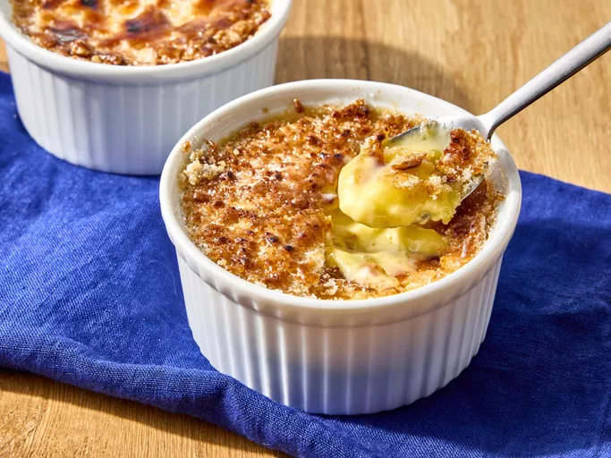
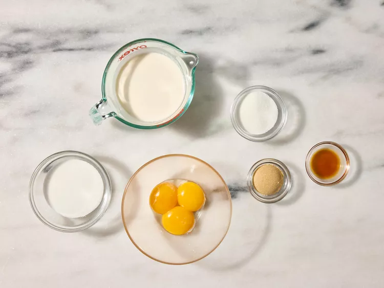
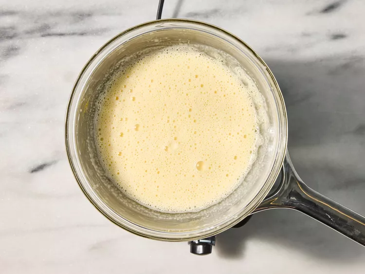
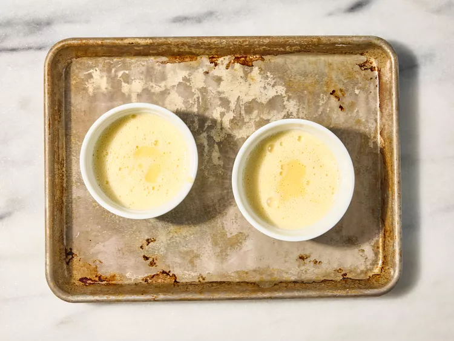
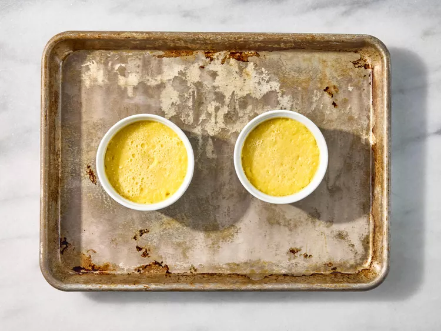
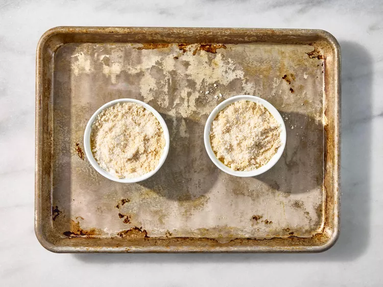
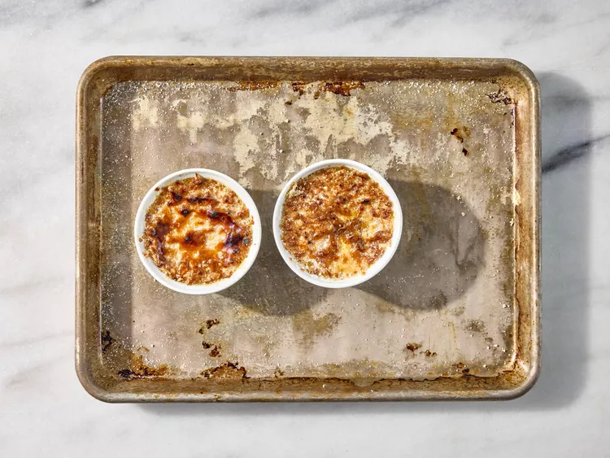

Perfect Crème Brûlée

Description
Crème brûlée is a classic French dessert celebrated for its creamy texture and rich flavor. It features a smooth custard base made from egg yolks, heavy cream, and vanilla, topped with a caramelized layer of sugar. This creates a delightful contrast between the crisp crust and velvety custard. Crème brûlée is both elegant and simple, captivating dessert lovers with its perfect balance of sweetness and sophistication.
Ingredients for 4 servings
- 3 large egg yolks
- ¼ cup white sugar
- 1 teaspoon vanilla extract
- 1 cup heavy cream
- 2 tablespoons white sugar
- 1 tablespoon brown sugar
Directions
- Gather the ingredients. Preheat the oven to 300 degrees F (150 degrees C). Move an oven rack to the lowest position.

- Whisk egg yolks, 1/4 white sugar, and vanilla together in a heatproof bowl until smooth. Bring cream just to a simmer in a saucepan over medium-low heat; gradually whisk hot cream into egg yolk mixture (a little at a time to prevent the mixture from scrambling), whisking continuously until combined.

- Bring a couple of inches of water to a simmer in a saucepan over medium-low heat; set the bowl with cream mixture over the saucepan to form a double boiler. Cook, gently stirring with a wooden spoon, until cream mixture thickens enough to easily coat the back of the spoon.

- Pour hot cream into a heat-proof baking dish or individual ramekins set on a rimmed baking sheet. Place in the preheated oven; bake until mixture sets but has a slight jiggle, about 20 to 30 minutes.

- Chill in the refrigerator for 2 hours.

- To make the topping: Preheat the oven's broiler and set the oven rack about 6 inches from the heat source. Combine 2 tablespoons white sugar and brown sugar in a small bowl; sprinkle evenly over cold crème brûlée.

- Heat under the preheated broiler until sugar melts and browns, 2 to 3 minutes; return immediately to the refrigerator and chill until sugar is set, about 15 minutes.

Cook's Note
You can cook the crème brûlée in a water bath if you prefer. Place baking dish (or ramekins) in a deep roasting pan; pour in enough boiling water to come halfway up the sides of the dish. Bake in preheated oven until just set, about 20 to 25 minutes.
## Recipe from all-recipes.com, specifically this one.